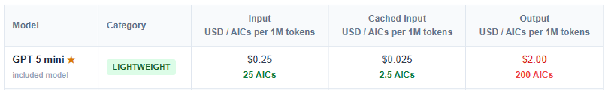
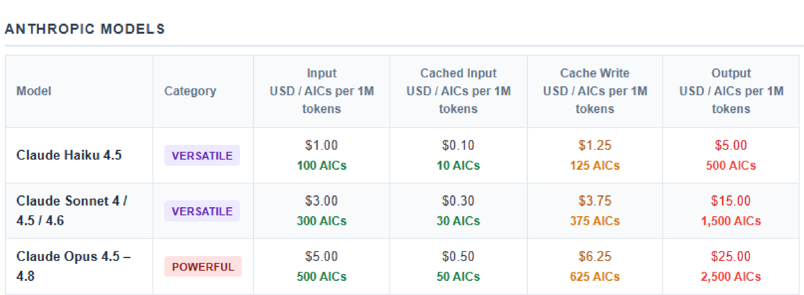

Understanding tokens, input tokens, output tokens, cached inputs, cache writes, and how they influence AI Credit (AIC) consumption.
1 AI Credit (AIC) = $0.01 USD
$1.00 = 100 AICs
$10.00 = 1,000 AICs


| Content | Approx Tokens |
|---|---|
| 1 word | 1–2 tokens |
| 1 line of code | 5–20 tokens |
| 100 lines of code | 1,000–3,000 tokens |
| 500 lines of code | 5,000–15,000 tokens |
| 3000 lines of code | 30,000–100,000+ tokens |
Tokens are the units used by Large Language Models (LLMs) to process prompts, source code, files, images, and generated responses.
Input tokens are the tokens sent to the model.
void uart_init(void)
{
HAL_UART_Init(&huart7);
}
If you ask:
Review this function
Copilot receives:
Total = Input Tokens
Output tokens are generated by the model.
Issues found: 1. No error checking 2. Missing timeout handling 3. Recommend validating return values 4. Consider adding logging
Generated response = Output Tokens
Previously processed content can often be reused at a significantly lower cost.
Review uart.c File Size: 20,000 tokens
Processed at the normal Input Token rate.
Review UART error handling
The model may reuse previously analyzed UART context.
| Context | Type |
|---|---|
| 20,000 UART tokens | Cached Input |
| New prompt | Input |
Previously analyzed content is often cheaper than processing the same content as entirely new input.
Best Practice:
Create a memory.md file after analysis. Prompt: "Read memory.md and continue UART review."
This keeps context small while preserving important project knowledge.
GPT-5 Mini Prompt: 10,000 Input Tokens Cost: 10,000 × 25 / 1,000,000 = 0.25 AIC
20,000 Cached Tokens 20,000 × 2.5 / 1,000,000 = 0.05 AIC
Cached content is typically much cheaper than reprocessing the same content as new input.
Cache Write occurs when the platform stores processed content so it can be reused later.
Prompt 1: Analyze 3000 lines of source code
The system may create a cache entry for the analyzed content.
Prompt 2: Review timeout handling in the same file
Instead of reprocessing the entire file, the model may reuse the cached representation.
| Stage | Description |
|---|---|
| Cache Write | Store processed context |
| Cached Input | Reuse stored context later |
Cache Write = Creating reusable context
Cached Input = Reusing reusable context